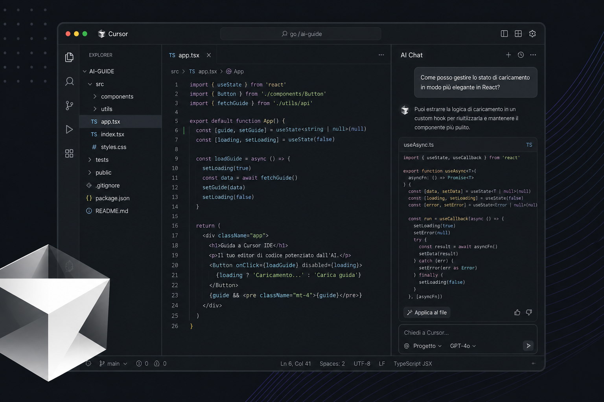

Cursor IDE: guida completa dalla A alla Z
Tutto ciò che serve per lavorare con l’editor AI-first di Anysphere: interfaccia, Agent, regole, MCP, agenti cloud, CLI e sicurezza.
1. Introduzione
Cursor è un ambiente di sviluppo integrato (IDE) progettato attorno all’intelligenza artificiale, sviluppato da Anysphere. È costruito sul codice open source di Visual Studio Code, quindi l’aspetto e molte abitudini restano familiari: editor a schede, sidebar, terminale integrato, estensioni e temi.
La differenza fondamentale è che l’AI non è un plugin aggiuntivo: è parte dell’architettura. Cursor combina autocompletamento predittivo (Tab), chat e agenti che modificano più file (Agent), modifica mirata del codice selezionato (Inline Edit), ricerca semantica sulla codebase, terminale assistito e integrazioni esterne tramite MCP (Model Context Protocol).
Per chi è
Sviluppatori che vogliono accelerare comprensione, implementazione, refactor, test e review del codice.
Cosa supporta
La maggior parte dei linguaggi e framework; estensioni via Open VSX (non il Marketplace Microsoft).
Account
Registrazione gratuita su cursor.com; piani a pagamento per usage AI esteso e funzioni team.
Panoramica delle capacità
2. Installazione e primi passi
Requisiti di sistema
| Piattaforma | Requisiti | Installazione consigliata |
|---|---|---|
| macOS | macOS 12 Monterey o successivo; Apple Silicon o Intel | Scarica il file .dmg da cursor.com/download, trascina in Applicazioni |
| Windows | Windows 10 o successivo | Installer .exe |
| Linux | Distribuzioni moderne | Repository APT (Debian/Ubuntu) o DNF (Fedora/RHEL); alternativa AppImage |
Primo avvio — checklist
- Apri Cursor e accedi con il tuo account.
- File → Open Folder e seleziona un repository di progetto.
- Attendi l’indicizzazione della codebase (barra di stato).
- Apri l’Agent con Cmd+I (Mac) o Ctrl+I (Windows/Linux).
- Chiedi una spiegazione dell’architettura del progetto, poi una modifica piccola con revisione del diff.
- Per task ampi, usa la Plan Mode (Shift+Tab o comando
/plan).
Migrazione da VS Code
Cursor e VS Code possono convivere sullo stesso progetto. Per importare il profilo:
- Apri Cursor Settings con Cmd+Shift+J (Mac) o Ctrl+Shift+J (Win/Linux).
- Vai su General → Account → VS Code Import → Import.
- Importa estensioni, temi, impostazioni e scorciatoie.
3. Interfaccia
L’interfaccia eredita il layout di VS Code e aggiunge pannelli dedicati all’AI e alla personalizzazione.
| Area | Funzione |
|---|---|
| Editor centrale | File, diff, split view, schede multiple |
| Sidebar sinistra | Explorer, ricerca, controllo versione, estensioni |
| Pannello Agent | Chat, Agent, Plan, Ask — Cmd/Ctrl+I o L |
| Customize | Regole, skill, MCP, plugin, subagent, hook |
| Terminale | Shell integrata; prompt AI con Cmd/Ctrl+K nel terminale |
| Status bar | Stato Tab, indicizzazione, branch Git |
Due impostazioni distinte
- Cursor Settings (Cmd/Ctrl+Shift+J): privacy, modelli, Tab, Agent, indexing, Run Modes.
- Impostazioni editor VS Code (Cmd/Ctrl+,): tema, font, formattazione, estensioni.
Agents Window
Da Cursor 3 in poi esiste una vista dedicata alla gestione di più agenti in parallelo (locali e cloud), handoff tra cloud e desktop, worktree isolati e integrazione con PR.
Per aprirla: Command Palette (Cmd/Ctrl+Shift+P) → Open Agents Window. Per tornare all’editor classico: Open IDE.
4. Funzionalità AI
Cursor offre più “modalità” di assistenza AI, ognuna adatta a un diverso livello di autonomia e rischio.
| Funzione | Scopo | Accesso rapido |
|---|---|---|
| Tab | Autocompletamento predittivo multi-riga mentre scrivi | Tasto Tab |
| Inline Edit | Modifica il codice selezionato con istruzioni in linguaggio naturale | Cmd/Ctrl+K |
| Agent | Assistente autonomo: cerca, modifica più file, esegue comandi, browser | Cmd/Ctrl+I |
| Ask | Solo lettura: spiegazioni senza modificare file | Mode picker / Shift+Tab |
| Plan | Piano strutturato prima dell’implementazione | Shift+Tab o /plan |
| Debug | Ipotesi, log e fix mirati per bug | Mode picker |
Tab (autocompletamento)
- I suggerimenti appaiono in grigio; Tab accetta l’intero suggerimento, Esc lo rifiuta.
- Cmd/Ctrl+→ accetta una parola alla volta.
- Supporta modifiche multi-riga, import automatici e salti tra punti del file (“jump-in-file”) con un secondo Tab.
- Dalla status bar puoi mettere Tab in pausa (Snooze), disabilitarlo globalmente o per estensione di file.
Modifica inline (Cmd+K)
- Seleziona il codice da modificare.
- Premi Cmd/Ctrl+K, scrivi l’istruzione, premi Invio.
- Per una domanda senza modifiche: Opt+Return (Mac) o Alt+Return (Win/Linux).
- Per aprire l’Agent con il codice selezionato come contesto: Cmd/Ctrl+L.
Agent
L’Agent è il cuore del flusso di lavoro “agentico”. Può:
- Cercare nel progetto (grep semantico e Instant Grep).
- Leggere e modificare file (inclusi allegati immagine per modelli con visione).
- Eseguire comandi nel terminale integrato (secondo le Run Modes).
- Navigare il web e usare il browser integrato per test UI.
- Fare domande di chiarimento e mettere in coda i tuoi messaggi mentre lavora.
- Usare subagent (Explore, Bash, Browser e custom in
.cursor/agents/). - Creare checkpoint locali per ripristinare uno stato (non sostituiscono Git).
Coda messaggi: mentre l’Agent è occupato puoi inviare altri messaggi in coda. Cmd/Ctrl+Return invia subito senza attendere.
Side chat: conversazioni parallele con /side o Shift+Cmd/Ctrl+S.
Modalità Agent
Cambia modalità con Shift+Tab o il menu modalità (Cmd/Ctrl+.):
- Agent — implementazione completa con tool.
- Ask — esplorazione e spiegazioni senza scrivere file.
- Plan — definisci passi e approvazione prima del codice.
- Debug — ciclo ipotesi / verifica per bug difficili.
.mdc.
5. Modelli AI
In Cursor Settings → Models scegli il modello predefinito e gestisci il pool di utilizzo. I piani a pagamento distinguono spesso:
- Cursor Models — modelli ottimizzati per Cursor (es. Composer, Grok).
- Other Models — modelli di terze parti (OpenAI, Anthropic, Google, ecc.) fatturati come usage API.
Modelli proprietari (esempi)
| Modello | Profilo d’uso |
|---|---|
| Composer 2.5 | Veloce ed economico per coding agentico quotidiano |
| Grok 4.5 | Flagship per task complessi e ragionamento profondo |
Router automatico (Auto)
Le modalità Auto Cost, Auto Balance e Auto Intelligence delegano la scelta del modello a Cursor per bilanciare costo e qualità. Per task critici, seleziona esplicitamente un modello frontier.
Suggerimenti pratici
- Task routine: Composer o Auto Cost.
- Refactor architetturali: Grok, Claude Opus, GPT Sol o equivalenti frontier.
- Cicla tra modelli recenti: Cmd/Ctrl+/.
- BYOK (Bring Your Own Key): chiavi API proprie in impostazioni — la privacy segue la policy del provider scelto.
Lista aggiornata e prezzi: Models & Pricing.
6. Regole e personalizzazione
Le regole istruiscono l’Agent su convenzioni, stack, stile e vincoli del progetto. Ordine di precedenza tipico:
- Team Rules (dashboard organizzazione)
- Project Rules (
.cursor/rules/*.mdc) - User Rules (globali, in Customize)
- File alternativi:
AGENTS.md,CLAUDE.mdnella root o in sottocartelle
Project Rules (.mdc)
Ogni file in .cursor/rules/ usa frontmatter YAML e un tipo di applicazione:
| Tipo | Quando si applica |
|---|---|
| Always Apply | Ogni conversazione Agent nel progetto |
| Apply Intelligently | Quando la description è pertinente al task |
| Apply to Specific Files | Pattern globs sui path dei file |
| Apply Manually | Solo se menzioni @nome-regola |
Creazione rapida: comando /create-rule in chat, oppure New Cursor Rule dalla palette comandi.
---
description: Convenzioni API REST del backend
globs: src/api/**/*.ts
alwaysApply: false
---
- Usa Zod per validazione input.
- Rispondi sempre con JSON e codici HTTP coerenti.
- I messaggi d'errore per l'utente finale devono essere in italiano.
.cursorrules (legacy)
File singolo nella root del repo, deprecato. Migra il contenuto in una regola .mdc con alwaysApply: true.
AGENTS.md e CLAUDE.md
Markdown semplice senza frontmatter: ideale per istruzioni di build, test, architettura. I file annidati in sottocartelle aggiungono contesto locale (es. regole solo per il modulo mobile).
Skill, plugin e subagent
- Skills — workflow multi-step invocabili con slash command (es. deploy, review interna).
- Plugin — pacchetti di regole, skill e integrazioni dal marketplace Cursor.
- Subagent — agenti specializzati definiti in
.cursor/agents/per esplorazione, shell o compiti ripetibili.
Hub unificato: sidebar Customize.
7. Contesto e indicizzazione
La qualità delle risposte dipende dal contesto che Cursor può vedere: file aperti, indice semantico, menzioni esplicite e regole.
Indicizzazione codebase
- All’apertura del progetto Cursor calcola embeddings per la ricerca semantica.
- I chunk sono trattati con crittografia lato client/server secondo la documentazione ufficiale; il codice non viene memorizzato in chiaro per il training se Privacy Mode è attiva.
- Instant Grep accelera ricerche regex su repository grandi.
- Workspace multi-root: tutte le root vengono indicizzate; alcune funzioni Git e i Cloud Agents possono avere limitazioni.
Menzioni @
| Menzione | Uso |
|---|---|
@file / @cartella/ | Includi file o directory specifici |
@Terminals | Output del terminale |
@Past Chats | Contesto da conversazioni precedenti |
@Commit | Diff dello stato di lavoro non committato |
@Branch | Diff rispetto a main |
@Browser | Contesto dal browser integrato |
@regola / @skill | Regole e skill manuali |
@Docs | Documentazione esterna indicizzata (URL crawlati) |
Non è sempre obbligatorio usare @: l’Agent può cercare autonomamente. Usa le menzioni quando conosci già il file giusto o vuoi vincolare il contesto.
Altri input: drag & drop immagini, incolla screenshot, selezione codice + Cmd/Ctrl+Shift+L, input vocale. L’anello contesto accanto all’input mostra come sono distribuiti i token (regole, MCP, conversazione).
Documentazione esterna (@Docs)
Aggiungi documentazione da Indexing & Docs o tramite @Docs → Add new doc. Incolla l’URL della homepage della documentazione; Cursor indicizza le pagine collegate. Referenzia @Docs nei messaggi in cui serve — non resta implicitamente per tutta la thread.
File di ignore
| File | Effetto |
|---|---|
.gitignore | Rispettato automaticamente |
.cursorignore | Escluso da indexing, Agent, Tab, Inline Edit e @mention |
.cursorindexingignore | Escluso solo dalla ricerca/indice; l’AI può ancora aprire il file se necessario |
.cursorignore per segreti: usa variabili d’ambiente e vault.
# Esempio .cursorignore
.env
.env.*
**/secrets/**
dist/
node_modules/
*.pem
8. MCP (Model Context Protocol)
MCP è uno standard aperto per collegare Cursor a dati e strumenti esterni: GitHub, Linear, database, Slack, server custom, ecc.
Configurazione
- Progetto:
.cursor/mcp.json - Globale:
~/.cursor/mcp.json - Installazione one-click dal Marketplace Cursor o da directory community (es. cursor.directory).
{
"mcpServers": {
"esempio": {
"command": "npx",
"args": ["-y", "@example/mcp-server"],
"env": {
"API_TOKEN": "${env:MY_TOKEN}"
}
}
}
}Trasporti supportati: stdio (processo locale), SSE e Streamable HTTP per server remoti. Interpolazione variabili: ${env:VAR}, ${workspaceFolder}, ${userHome}.
Uso e sicurezza
- I tool MCP compaiono tra gli strumenti disponibili all’Agent; di default richiedono approvazione prima dell’esecuzione.
- Log diagnostici: pannello Output → MCP Logs.
- Non inserire segreti in chiaro nel JSON: usa variabili d’ambiente.
- In Enterprise: allowlist MCP e distribuzione team dalla dashboard.
9. Terminale e sicurezza
Terminale integrato
L’Agent esegue comandi shell nel terminale secondo la Run Mode configurata. Nel terminale, Cmd/Ctrl+K genera comandi da linguaggio naturale; Cmd/Ctrl+Return li esegue.
Se il prompt della shell è lento in sessioni Agent, configura il profilo per rilevare CURSOR_AGENT e disabilitare temi pesanti.
Run Modes
| Modalità | Comportamento |
|---|---|
| Auto-review (default) | Allowlist, sandbox, classificatore per comandi nuovi |
| Allowlist | Solo comandi esplicitamente consentiti |
| Run Everything | Nessuna conferma — da evitare su codice sensibile |
Sandbox
Su macOS e Linux (kernel ≥ 6.2) i comandi possono girare in sandbox con restrizioni su file system e rete. Configurazione opzionale in ~/.cursor/sandbox.json e .cursor/sandbox.json.
Protezioni aggiuntive
- Browser Protection, File-Deletion Protection, External-File Protection.
permissions.jsonper istruzioni in linguaggio naturale nella modalità Auto-review.- I Cloud Agents girano in VM dedicata: le Run Mode desktop non si applicano allo stesso modo.
10. Privacy
Privacy Mode (Cursor Settings → General): quando attiva, il codice non viene usato per addestrare modelli Cursor né provider terzi, secondo la policy corrente.
- I prompt e il contesto vengono comunque inviati ai provider del modello scelto per generare la risposta.
- Elenco subprocessori: trust.cursor.com/subprocessors.
- Enterprise: audit log, controlli modello, SOC 2 Type II, opzioni CMEK.
- Workspace Trust di VS Code: se abilitato in modo restrittivo può interferire con le funzioni AI.
11. Scorciatoie da tastiera
Su Windows e Linux usa Ctrl al posto di Cmd. Tutte le scorciatoie sono modificabili da Keyboard Shortcuts.
| Azione | macOS | Windows / Linux |
|---|---|---|
| Apri Agent / sidepanel | Cmd+I o L | Ctrl+I o L |
| Modifica inline | Cmd+K | Ctrl+K |
| Menu modalità | Cmd+. | Ctrl+. |
| Ruota modalità Agent | Shift+Tab | Shift+Tab |
| Cicla modelli | Cmd+/ | Ctrl+/ |
| Cursor Settings | Cmd+Shift+J | Ctrl+Shift+J |
| Impostazioni VS Code | Cmd+, | Ctrl+, |
| Command Palette | Cmd+Shift+P | Ctrl+Shift+P |
| Aggiungi selezione a chat | Cmd+Shift+L | Ctrl+Shift+L |
| Side chat | Shift+Cmd+S | Shift+Ctrl+S |
| Invio immediato (Agent occupato) | Cmd+Return | Ctrl+Return |
| Annulla generazione | Cmd+Shift+Backspace | Ctrl+Shift+Backspace |
| Voice Mode | Cmd+Shift+Space | Ctrl+Shift+Space |
| Layout Agents | Cmd+E | Ctrl+E |
| Accetta parola Tab | Cmd+→ | Ctrl+→ |
Riferimento completo: Keyboard shortcuts.
12. Piani e Teams
I dettagli cambiano nel tempo; verifica sempre cursor.com/pricing e la dashboard usage.
Piani individuali (sintesi)
| Piano | Profilo |
|---|---|
| Hobby | Gratuito con limiti sull’usage AI |
| Pro | Uso quotidiano per sviluppatori singoli |
| Pro+ / Ultra | Maggiore allowance per modelli third-party e uso intensivo |
Completamenti Tab spesso illimitati sui piani Pro+. Oltre l’allowance incluso, l’usage on-demand è fatturato a tariffa API del modello.
Teams ed Enterprise
- Billing centralizzato, SSO (SAML/OIDC), Privacy Mode per team.
- Team Rules, marketplace interno, analytics, Bugbot e Cloud Agents.
- Enterprise: usage pooled, SCIM, controlli avanzati, supporto dedicato.
Gestione fatture e abbonamento: dashboard billing.
13. Bugbot e Cloud Agents
Bugbot
Revisione automatica di pull request e merge request su GitHub, GitLab e Bitbucket.
- Si attiva a ogni push sulla PR o con commento
cursor review/bugbot run. - Segnala bug, problemi di sicurezza e qualità; link Fix in Cursor o Fix in Web.
- Regole dedicate:
.cursor/BUGBOT.md(anche annidato), team rules, memorie con@cursor remember …. - Non usa le project rules
.mdccome l’Agent desktop. - Autofix: un Cloud Agent può proporre fix automatici (richiede configurazione e billing adeguati).
Setup: integrazione SCM + Automations → Bugbot.
Cloud Agents
Agenti che girano in macchine virtuali cloud con repository clonato, dipendenze installate e secret configurati.
- Avvio da desktop (dropdown Cloud), cursor.com/agents, Slack
@cursor, menzioni su GitHub/Linear, API. - Producono branch, pull request, screenshot/video e desktop remoto per demo.
- Ambiente:
.cursor/environment.json, snapshot, build pre-warm dalla dashboard. - Richiedono piano a pagamento e integrazione con il provider Git.
{
"install": "npm ci",
"start": "npm run dev",
"terminals": []
}Esempio di task cloud: «Aggiungi test di integrazione per il modulo pagamenti, esegui la suite e apri una PR con screenshot del flusso.»
14. Cursor CLI
La CLI porta Agent, Plan e Ask nel terminale — utile per SSH, CI e automazioni.
Installazione
# macOS, Linux, WSL
curl https://cursor.com/install -fsS | bash
# Windows PowerShell
irm 'https://cursor.com/install?win32=true' | iexComandi essenziali
agent # sessione interattiva
agent "refactor auth module" # prompt iniziale
agent -p "review changes" # output non interattivo
agent --mode=ask # sola lettura
agent --plan # Plan mode
agent ls # elenco sessioni
agent resume # riprendi sessione
agent --worktree "fix tests" # worktree Git isolatoLa CLI rispetta AGENTS.md, regole, mcp.json e le stesse modalità di approvazione comandi. Documentazione: CLI overview.
15. Best practice per sviluppatori
Workflow consigliato
- Usa Ask per capire, poi Agent o Plan per implementare.
- Mantieni modifiche piccole; rivedi ogni diff; committa su Git con messaggi chiari.
- Se l’output è sbagliato: ripristina checkpoint o
git checkout, affina il prompt o il piano, riprova. - Metti in coda i messaggi sequenziali invece di interrompere l’Agent a metà task.
Contesto e performance
- Usa
@filequando sai già dove guardare; altrimenti lascia che l’Agent cerchi. - Escludi
node_modules, build e artefatti con.cursorignore. - Monitora l’anello contesto; conversazioni molto lunghe degradano la precisione.
- Versiona
.cursor/rules/eAGENTS.mdnel repository.
Sicurezza
- Privacy Mode per codice proprietario sensibile.
- Run Mode Auto-review, mai Run Everything su progetti reali senza necessità.
- MCP solo da fonti fidate; token in variabili d’ambiente.
Lavoro di squadra
- Team Rules per standard org-wide; Bugbot +
BUGBOT.mdper review coerenti. - Cloud Agents con
environment.jsone secret in dashboard, non nel repo.
16. Glossario
| Termine | Significato |
|---|---|
| Agent | Assistente AI autonomo con accesso a file, tool e terminale |
| Tab | Autocompletamento predittivo inline mentre digiti |
| MCP | Protocollo per collegare tool e dati esterni all’Agent |
| Embedding / Index | Rappresentazione vettoriale del codice per ricerca semantica |
| Checkpoint | Snapshot locale delle modifiche Agent per undo rapido |
| Cloud Agent | Agent eseguito su VM remota con integrazione Git/PR |
| Bugbot | Bot di review automatica sulle pull request |
| BYOK | Bring Your Own Key — chiavi API proprie per i modelli |
| Open VSX | Marketplace estensioni usato da Cursor al posto di quello Microsoft |
17. Risorse ufficiali
- Documentazione
- Help Center
- Download
- Changelog
- Cloud Agents
- Marketplace
- Dashboard account
- Forum community